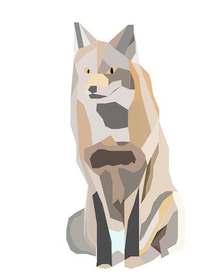
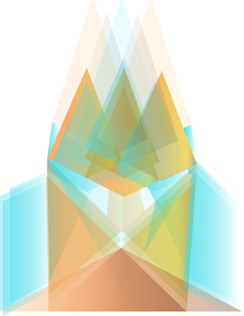
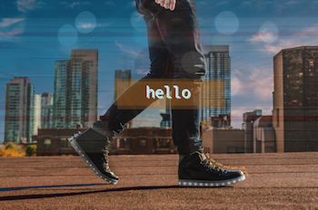
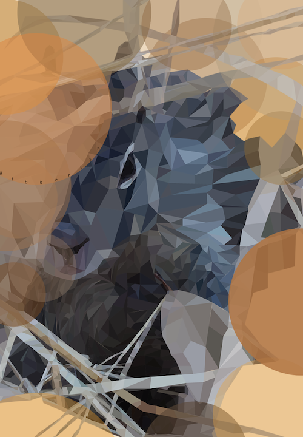
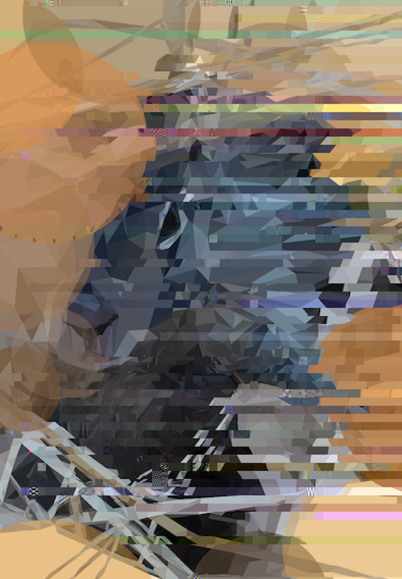
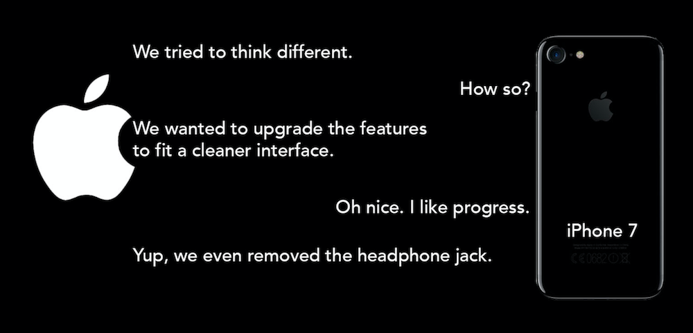
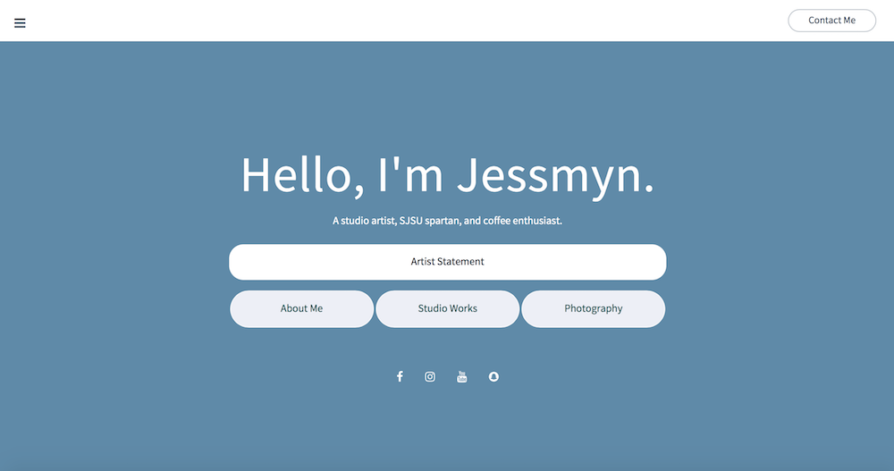
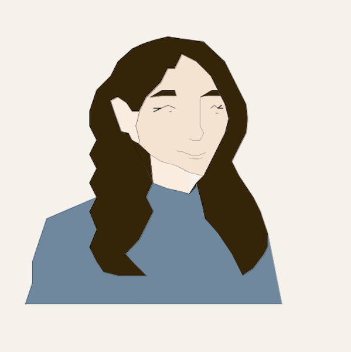

A COMPILATION OF MY PIECES FOR DIGITAL MEDIA, FALL 2017
PROJECT I - PHOTOSHOP + ILLUSTRATOR ("Experiment with Adobe Photoshop & Adobe Illustrator, utilizing different techniques.")
  PROJECT II - GLITCH ("Using a mixture of raster and vector based images, create an original art form. By deconstructing and manipulating this form of art, make new aesthetics that convey a conceptual idea.")
 PROJECT III - MASHUP ("Internet memes drive culture today. Create a work of art using multiple current memes and combine them together to create a unique statement.")
PROJECT IV - VIDEO + SOUND ("Explore ideas of camera placement, video editing, and adding visual effects, using Adobe Premiere Pro. Using basic recording techniques, go out into the world and find interesting sounds and record them. Produce high quality field recordings, or mix sound together to create a unique sound scape.")
PROJECT V - NET ("Using HTML and CSS, create a web narrative that tells an interesting story engaging contemporary discourse in a poetic way.")
PROJECT VI - PORTFOLIO ("Building on the skills that you developed, develop a portfolio of some works as a webpage. Your portfolio should look professional and be hosted on the University’s servers.")
PROJECT VII - CODE AS ART ("Drawing with code: using the free resource Processing software to draw a creative form such as a self-portrait, a worldly creature, imaginative structure, etc.")
PROJECT VII - INTERACTIVE